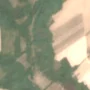
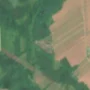

2,1 ha · Popești, com. Bărăști
văzută schimbată prima dată pe 24 apr. 2026


Autorizația cea mai apropiată nu acoperă tăierea: schimbarea cade în afara parcelei autorizate.
APV 2400096802210 · Ocolul Silvic Slatina, valabilă 14 iul. 2025 – 28 sept. 2025, la 8 m
Terenul: pădure de stat, după amenajamentul silvic publicat.
Ce se vede în poze: În poza detaliată din 2024 zona marcată era acoperită de pădure deasă. În poza «după» apare o pată deschisă, cu pământ viu la culoare, în timp ce pădurea din jur rămâne verde, deci copacii par tăiați.